~2 To Locate Keyframes in your Video~
6/8/2026
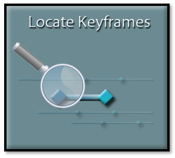
You could scrub your timeline under your Preview Window, and watch for your red diamond to pop up in your inspector, in order to find all of the keyframes, you have just placed on your timeline.
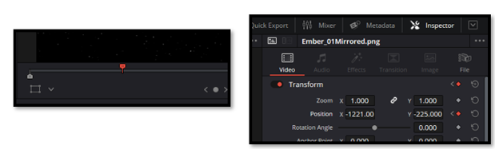
Keyframes Panel
But there is a better way. Open your Keyframe Panel. Upper left side of the DaVinci user interface.
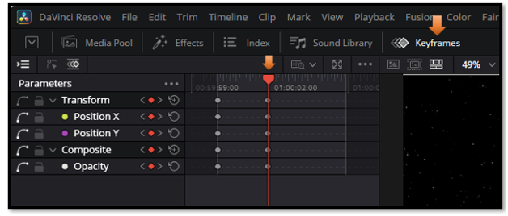
Deciding How to view your Keyframe Panel
The Keyframe Panel gives you three viewing modes: the Parameter List, the Curve Graph, and the Keyframe Timeline. Each one helps you work with keyframes in a different way.
At the top left of this panel, you will see some little icons. You can easily miss them if you are not really looking at them. But this gives you an option for how you want to view this panel.
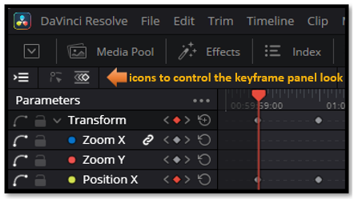
The first icon, gives you your Parameter list.
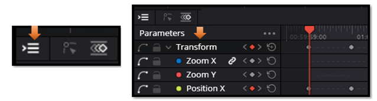
If you turn this first icon, off you will only see your keyframes. As you can see here, without the listed parameter names to the left of it.
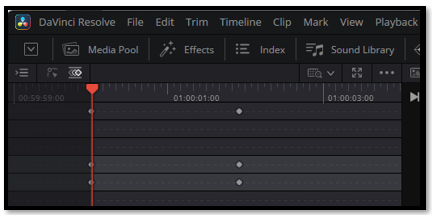
The Curve Graph Icon
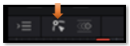
The Curve Graph lets you control the speed of your animation. This is where you add easing, which makes movements feel smoother and more natural.
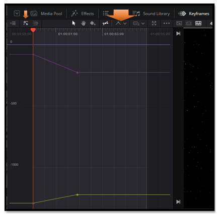
You will have to select either the second or third icon. But you can turn off the list, if you do not wish to view it. Here we have the Curve graph selected. This is your second icon, out of the three, that they give you. You will want this, if you are interested in giving the keyframes some easing in and out. When you switch to the Curve Graph, additional tools appear on the right. These let you adjust how your keyframes behave. For example, you can select all of them and smooth them out. This will smooth out the way that your animation runs on the timeline. This is a very useful trick.
Drag to select your keyframes on the graph, then click this button to smooth the motion.
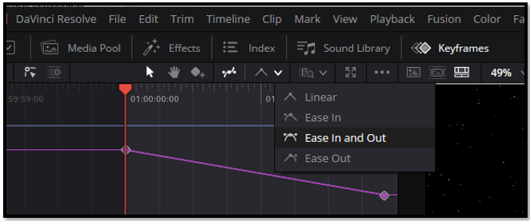
Now you can click on this icon, and go into Detail mode, or Full Extent Zoom. The slider will zoom you in or out. Zooming in, helps you make precise adjustments, while Full Extent Zoom lets you see your entire animation at once.
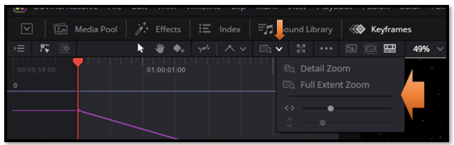
The Key Frame Icon
This is your third icon, out of the three icons on the left top of this panel. If I am not working with trying to ease my keyframes. This view can be perfect, especially when I want to quickly locate all of my keyframes across the clip without opening the Curve Graph.
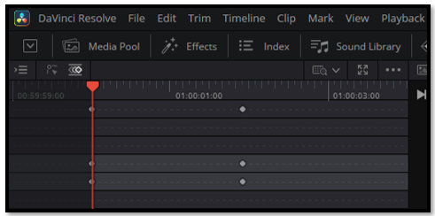
Turning Back on the Parameter list.
Clicking the first icon turns the Parameter List on or off. It works alongside the other two icons, so you can choose whether you want to see the parameter names while viewing your keyframes.
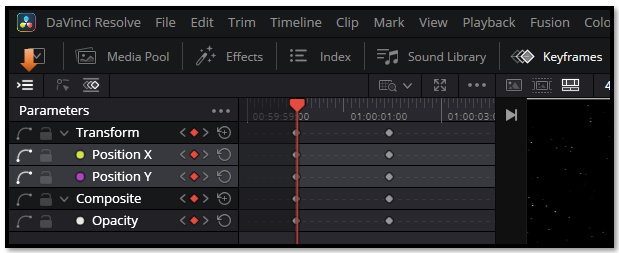
The Parameter List Hamburger Menu
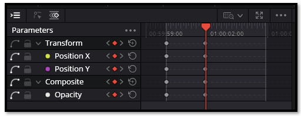
But we could choose to view all of our parameters by going to the 3 dot, hamburger menu above your parameter list.
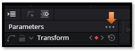
Now this here is a very useful menu, if you take a look at it. The first one, which I have selected shows me only what I want to see at the time, which is the keyframes that I am actually working with.
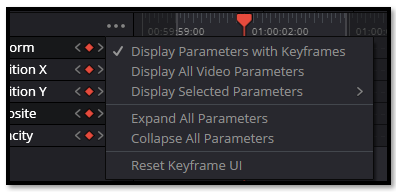
If you’re adding new effects or parameters and want to see everything available, choose Display All Video Parameters.
Yes, we might find this is a little much for what we would want most of the time.
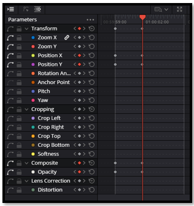
Here you can choose which parameters you want to see — the ones you’re working with now, or others that you may want to reference later.
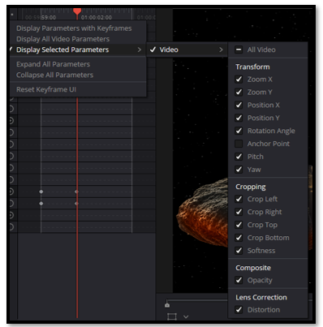
Some parameters, like Transform or Cropping, contain sub‑controls. If those are available, you can expand or collapse them here.
To Delete all Keyframes
Unfortunately, that last option to reset Keyframe UI, will not erase your keyframes where you can start again. To erase the keyframes, you actually need to draw a square marquee around all of your keyframes and then delete them, manually. Make sure you’re selecting the keyframes in the timeline area, not the parameter names.
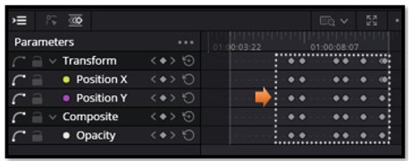
Resetting the Clip After Deleting Keyframes
Deleting the keyframes in the Keyframe Panel removes the animation, but it does not return the clip to its original state. The Inspector will still hold whatever values the last keyframe left behind.
To fully reset the clip:
- Select all keyframes in the Keyframe Panel and delete them. This removes the animation.
- Then reset the Inspector parameters back to their defaults. Click the small circular reset icon next to each setting (Zoom, Position, Rotation, Anchor Point, Opacity, etc.). This restores the clip to its original, un‑animated state.
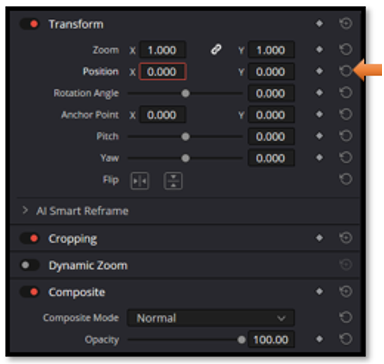
Understanding how keyframes and Inspector settings work together gives you precise control over your edits and opens the door to smoother, more intentional animation. As you continue practicing, these techniques will become second nature and give your projects a more polished, professional feel. Keep experimenting, keep refining, and enjoy the process of growing your editing toolkit.